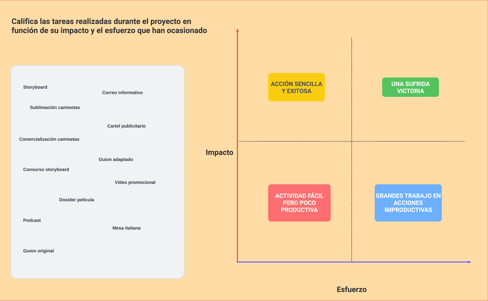

Reflexionar también forma parte del guion
 La evaluación del alumnado en La Herradura se centró en valorar no solo el resultado final, sino también la implicación, la actitud y la responsabilidad asumida durante todo el proyecto. Cada estudiante fue observado en su papel —ya fuese como actor, técnico, guionista o parte del equipo de difusión— atendiendo a aspectos como la creatividad, la cooperación, la capacidad de resolución de problemas y el compromiso con las tareas asignadas.
La evaluación del alumnado en La Herradura se centró en valorar no solo el resultado final, sino también la implicación, la actitud y la responsabilidad asumida durante todo el proyecto. Cada estudiante fue observado en su papel —ya fuese como actor, técnico, guionista o parte del equipo de difusión— atendiendo a aspectos como la creatividad, la cooperación, la capacidad de resolución de problemas y el compromiso con las tareas asignadas.
De este modo, la evaluación se convirtió en una herramienta para reconocer el esfuerzo individual dentro de un trabajo colectivo. Más allá de una calificación, supuso una oportunidad para que cada alumno reflexionara sobre lo que había aprendido, tanto en competencias técnicas como en valores fundamentales: el esfuerzo, la constancia y el compañerismo.
En el siguiente diagrama se puede comprobar una serie de ítems objeto de evaluación por parte del alumnado y la posibilidad de su incorporación en uno de los cuatro cuadrantes que combinan dos variables clave: impacto y esfuerzo.
Alguno de los ítems a evaluar son:
- Storyboard
- Sublimación de camisetas
- Correo informativo
- Cartel publicitario
- Guion adaptado
- Vídeo promocional
- Dosier de la película
- Guion original
La combinación de impacto y esfuerzo en sus niveles alto y bajo generan las siguientes conclusiones:
- Impacto ALTO y Esfuerzo BAJO: Acción sencilla y exitosa
- Impacto ALTO y Esfuerzo ALTO: Una sufrida victoria
- Impacto BAJO y Esfuerzo BAJO: Actividad fácil pero poco productiva
- Impacto BAJO y Esfuerzo ALTO: Grandes trabajos en acciones improductivas

Alumnado del IES Mare Nostrum. Coordenadas evaluación impacto vs esfuerzo (CC BY-SA)